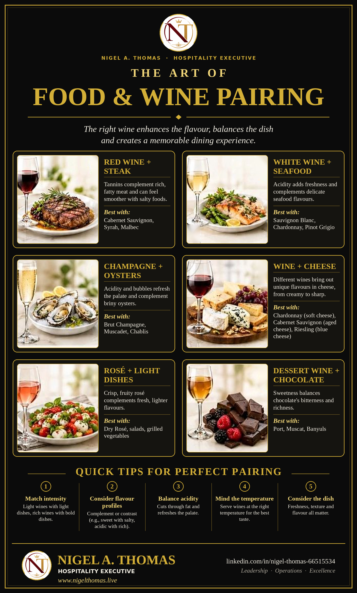

A great dish and a great wine can each stand alone, but placed side by side they can become something larger than either. The right wine lifts the flavour of the food, cleans the palate between bites and balances richness, salt, spice or sweetness. The wrong wine does the opposite: it flattens the dish, exaggerates bitterness or leaves the guest wondering why a perfectly good bottle suddenly tastes thin. Food and wine pairing is the craft of avoiding the second outcome and delivering the first, and for anyone working in hotels, restaurants, bars or banqueting it is one of the most valuable skills you can develop.
This guide goes with the infographic poster above and expands on every pairing it shows. After more than thirty years in hospitality, on ships, in hotels and in restaurants across India, the Middle East and the USA, one lesson stands out: guests do not need a lecture on wine. They need a confident, simple recommendation that makes their meal better. Understanding the reasons behind a pairing is what gives you that confidence, so we start with the principles and then move through the six classic pairings, cheese, spicy food, serving temperature and how to put it all into practice on the floor.
Why Pairing Works: The Building Blocks
Every pairing decision comes down to how the components of a dish interact with the components of a wine. Once you know what each element does in the mouth, you can predict most outcomes without memorising a single chart.
Acidity
Acidity is the freshness in a wine, the quality that makes your mouth water. It cuts through fat, refreshes the palate after rich bites and keeps heavy food from feeling cloying. This is why a crisp white works so well with fried fish and why a sparkling wine, which is usually high in acidity, is the classic partner for creamy or oily dishes. A useful rule is that the wine should be at least as acidic as the dish. A salad dressed with lemon or vinegar will make a low-acid wine taste flat and dull, while a high-acid wine will meet it on equal terms.
Tannin
Tannin is the grippy, drying sensation you feel on your gums and tongue after a sip of a structured red wine. It comes from grape skins, seeds and stems, and from oak barrels. Tannin binds to proteins and fats, so rich, fatty meat softens it and makes the wine feel smoother, while the wine in turn cleanses the fat from your palate. That mutual benefit is the secret behind the classic steak and Cabernet pairing. Tannin has a weakness, though: it clashes with delicate fish and with very spicy food, where it can taste metallic or bitter.
Sweetness
Sweetness in wine balances salt, spice and acidity, and it is the element that matters most with dessert. The golden rule here is that the wine must be at least as sweet as the dish. A dry wine served with a sweet dessert will taste sour and thin. Sweetness also tames heat, which is why off-dry wines are so useful with chilli.
Alcohol and Body
Body is the weight and texture of a wine in the mouth, driven mainly by alcohol, with help from sugar and tannin. Light dishes pair with lighter-bodied wines and rich dishes with fuller ones, which is the idea behind matching intensity. Alcohol also has a side effect worth remembering: it amplifies the burn of chilli, so a high-alcohol wine can make a spicy dish feel hotter.
Salt, Umami and Fat
Salt softens bitterness and astringency, which is why salty foods make tannic red wines feel rounder and fruitier. Umami, the savoury depth found in mushrooms, aged cheese, cured meats and soy, behaves differently: it can make a wine taste more bitter and less fruity, so very tannic or oaky wines struggle with umami-heavy dishes. Fat coats the palate and calls for either acidity or tannin to cut through it.
Two Approaches: Complement or Contrast
Nearly every successful pairing follows one of two strategies. In a complementary pairing the wine echoes something in the food: a buttery Chardonnay with a butter sauce, or an earthy Pinot Noir with mushrooms. In a contrasting pairing the wine provides something the food lacks: crisp acidity against rich, oily fish, or sweetness against salty blue cheese. Neither approach is better. The skill lies in choosing the strategy that suits the dish and the guest, and in remembering that a wine should never overpower the food or be overpowered by it.
Pairing 1: Red Wine and Steak
This is the pairing everyone knows, and it earns its reputation. A well-seared steak brings protein, fat and the savoury, caramelised flavours of the Maillard reaction. A structured red answers with tannin, dark fruit and often a touch of spice or oak. The fat softens the tannin, the salt on the crust rounds it further, and the acidity of the wine refreshes the palate for the next bite.
The poster lists three excellent choices. Cabernet Sauvignon, with its blackcurrant fruit and firm tannin, is the traditional partner for a ribeye or a well-marbled sirloin. Syrah, known as Shiraz in Australia and in India, brings black pepper, smoke and darker fruit, which suits peppery crusts and grilled meat. Malbec, famous in Argentina, is plusher and softer, with plum and cocoa notes, making it a generous match for a flame-grilled cut with chimichurri.
Service tips: match the wine to the cut and the sauce. A lean fillet is gentler on the palate and works with a more supple red, while a fatty ribeye can handle bigger tannins. A rich peppercorn or red wine sauce calls for fuller-bodied wines. If the guest orders a steak well done, choose fruitier, less tannic wines, because dry, heavily cooked meat tends to accentuate tannin.
Pairing 2: White Wine and Seafood
Delicate seafood flavours are easily overwhelmed, and this is where white wine shines. Its acidity works the way a squeeze of lemon does: it brightens the dish, lifts the sweetness of shellfish and refreshes the palate after richer preparations. Tannic reds, by contrast, often turn fishy and metallic next to seafood.
Sauvignon Blanc is the zesty, herbaceous choice for grilled prawns, steamed mussels, shellfish and dishes featuring fresh herbs or citrus. Chardonnay is the answer when the preparation is richer, such as lobster with butter, creamy seafood pastas or pan-seared salmon with a beurre blanc; look for lightly oaked or unoaked styles if the dish is delicate. Pinot Grigio is light, clean and neutral, and suits simple grilled white fish, calamari and lighter starters.
A useful tip for the floor: think about the sauce before the fish. A grilled fish with lemon needs a very different wine from the same fish in a cream sauce. The cooking method and the accompaniment usually decide the pairing more than the species on the plate.
Pairing 3: Champagne and Oysters
Oysters taste of the sea: briny, mineral and lightly sweet, with a creamy, silky texture. Champagne offers the perfect foil. Its high acidity and fine bubbles scrub the palate clean, while its yeasty, toasty notes complement the depth of the oyster. The result is refreshing rather than heavy, and it is why this pairing appears on celebration menus around the world.
Brut Champagne, which is dry with very little added sugar, is the benchmark. Muscadet, from the western Loire Valley, is a lean, saline white made from Melon de Bourgogne and has long been the oyster wine of the French coast. Chablis, an unoaked Chardonnay from northern Burgundy, has a steely, mineral character that mirrors the oyster itself. When guests are on a budget, other dry, high-acid sparkling wines can also work beautifully.
Service tip: serve oysters very cold on crushed ice with lemon and a mignonette, and make sure the wine is equally well chilled. Avoid sweet or demi-sec sparkling wines, which clash with the brine.
Pairing 4: Wine and Cheese
Wine and cheese is often presented as a perfect marriage, yet it rewards thought. Cheese varies enormously in fat, salt, acidity and intensity, and no single wine suits all of it. The poster highlights three dependable matches that show how different wines bring out different qualities in cheese.
- Soft and creamy cheese with Chardonnay. A Brie, Camembert or fresh cream cheese has a rich, buttery texture. Chardonnay echoes that creaminess, while its acidity keeps the pairing lively. Sparkling wine is another excellent choice for soft cheeses.
- Aged cheese with Cabernet Sauvignon. Hard, aged cheeses such as mature Cheddar, Gouda or Parmigiano-Reggiano have concentrated, savoury flavours and a firm texture that stand up to the tannin and structure of a bold red.
- Blue cheese with Riesling. Salty, pungent blue cheese is balanced by sweetness. An off-dry or sweet Riesling softens the salt and sharpness, and its acidity keeps the combination fresh. Sweet wines such as Sauternes and Port are classic partners for blue cheese for the same reason.
Fresh goat cheese pairs very well with Sauvignon Blanc, where the wine's tangy acidity mirrors the cheese. When building a cheese board, offer a range of textures and styles, and serve the lightest cheeses first. Take cheeses out of the refrigerator about thirty to sixty minutes before service so that their full flavour comes through.
Pairing 5: Rosé and Light Dishes
Rosé is the most versatile wine on the list. A dry, crisp, fruity rosé, with notes of strawberry, citrus and melon, sits comfortably between white and red wine in weight, which makes it the natural partner for fresh, lighter food. Think of tomato and mozzarella salad, Mediterranean mezze, Niçoise salad, grilled vegetables, light pasta and cold platters.
The key word is dry. Sweet, blush-style wines will not match savoury salads and grilled vegetables in the same way. A pale, dry rosé in the style of Provençe is the safest recommendation. Rosé is also a good choice for hot climates and outdoor service, such as poolside lunches and terrace dining, where a refreshing wine served well chilled is exactly what guests want. It works with grilled prawns and light barbecue too, which makes it a good all-rounder when a table orders a mix of dishes.
Pairing 6: Dessert Wine and Chocolate
Chocolate is notoriously difficult for wine because of its bitterness, richness and sweetness. The solution is to bring a wine that is sweeter than the dessert, with enough intensity to match the chocolate. Sweetness balances the bitterness, and the richness of a fortified or sweet wine is a worthy partner for the weight of the dessert.
Port, a fortified wine from Portugal's Douro Valley, offers ripe berry and chocolate notes, and is a classic with dark chocolate and chocolate desserts. Muscat, whether in a luscious fortified style or a lighter, gently sparkling one, is aromatic and fruity and pairs well with milk chocolate and fruit-based chocolate desserts. Banyuls, a fortified sweet wine from the south of France, is made mainly from Grenache and is widely regarded as one of the best matches for dark chocolate.
Service tip: match intensity again. A delicate white chocolate dessert needs a light, fresh sweet wine, while a dense flourless chocolate cake calls for something like Port or Banyuls. Serve dessert wines in smaller portions, since they are rich and often higher in alcohol.
Pairing Wine with Spicy and Indian Food
Guests in India and across the Middle East often want to enjoy wine with a spicy meal, and the standard rules need a few adjustments. Chilli heat is amplified by alcohol and tannin, so the best choices are usually lower in alcohol and tannin, with a little fruit sweetness or high acidity to cool the palate.
- Tandoori and grilled kebabs: a fruity Syrah or Shiraz or a dry rosé handles smoke and spice.
- Butter chicken and creamy curries: an off-dry Riesling or a Chenin Blanc, whose acidity and touch of sweetness balance the richness and gentle heat.
- Coastal fish curries: Sauvignon Blanc, dry Riesling or Chenin Blanc, whose freshness matches coconut, tamarind and curry leaf.
- Biryani: an aromatic white such as Gewürztraminer or off-dry Riesling, or a dry sparkling wine to refresh the palate between rich, fragrant bites.
- Very hot dishes: a lightly chilled, low-alcohol, off-dry white or a sparkling wine is safer than a heavy red.
Chenin Blanc is widely grown in India, and the Nashik region of Maharashtra has become the centre of the country's wine industry, so there is an excellent local opportunity for recommendations that guests find both interesting and sustainable.
Mind the Temperature and the Glass
Even a perfect pairing can fail if the wine is served at the wrong temperature. Serve wine too warm and alcohol dominates, making it taste heavy and flabby. Serve it too cold and aromas and flavours are muted. As a general guide:
- Sparkling wines, including Champagne: about 6 to 8°C.
- Light, crisp whites and dry rosé: about 7 to 10°C.
- Fuller whites such as oaked Chardonnay: about 10 to 13°C.
- Light reds: about 12 to 14°C.
- Full-bodied reds: about 15 to 18°C, which is often slightly below typical room temperature in warm climates.
- Sweet dessert wines: about 6 to 10°C, with fortified wines such as Port a little warmer.
In a warm room, red wines may need ten to fifteen minutes in an ice bucket or a chiller to reach the right temperature. Glassware matters as well. A tulip-shaped flute or a small white wine glass preserves the aroma and bubbles of sparkling wines, a medium glass suits whites and rosé, and a larger bowl lets full-bodied reds breathe. Always pour to roughly one third of the glass so guests have room to swirl.
Serving Order in a Multi-Course Meal
When a meal includes several wines, the order of service protects each wine and the guest's palate. The classic guidelines are: sparkling and light before full-bodied, white before red, dry before sweet, young before old and simple before complex. Following this sequence means each wine is tasted at its best and the palate is never overwhelmed by a heavier wine too early. For tasting menus, pour smaller measures and give each wine a brief, friendly description.
Putting Pairing into Practice on the Floor
Knowing the theory is only half of the job. Delivering a pairing to a guest is a service skill, and these habits help service teams do it well.
- Taste before you recommend. Staff who have tasted the wine and the dish together speak with real conviction. Hold short tastings before service so the team can recommend from experience.
- Offer two choices, not ten. Suggest a safe option and a more adventurous one, and let the guest decide. It keeps the conversation simple.
- Use plain language. Say “crisp and refreshing” or “soft and fruity” rather than technical jargon. Describe how the wine will make the dish taste.
- Ask about the dish, not just the wine. Ask how the guest's food is prepared and what sauce it comes with, because sauce and cooking method change the best match.
- Respect budget and preference. The best pairing is the one the guest enjoys. If a guest loves a particular wine, help them find the dish that suits it, not the other way round.
- Suggest by-the-glass options. Pairing by the glass lets guests try different wines with different courses, and it encourages responsible sales without pressure.
- Always serve responsibly. Watch the pace of service, offer water and know your venue's responsible service of alcohol policy.
Common Pairing Mistakes to Avoid
- Serving a heavily oaked or tannic red with delicate fish, which can taste metallic.
- Pairing a dry wine with a sweet dessert, which makes the wine taste sour.
- Ignoring the sauce and choosing only by the main ingredient.
- Pairing very spicy food with a high-alcohol, tannic wine, which amplifies the heat.
- Serving red wine too warm and white wine too cold.
- Overcomplicating the recommendation and losing the guest's confidence.
Quick Pairing Cheat Sheet
| Dish | Classic match | Why it works |
|---|---|---|
| Grilled steak | Cabernet Sauvignon, Syrah, Malbec | Tannin and fat balance each other |
| Grilled fish, shellfish | Sauvignon Blanc, Pinot Grigio | Acidity brightens delicate flavours |
| Butter or cream seafood | Chardonnay | Weight and texture match the sauce |
| Oysters | Brut Champagne, Muscadet, Chablis | Bubbles and minerality against brine |
| Soft cheese | Chardonnay, sparkling wine | Creaminess meets freshness |
| Aged hard cheese | Cabernet Sauvignon | Intensity stands up to structure |
| Blue cheese | Riesling, Port, Sauternes | Sweetness tames salt |
| Salads, grilled vegetables | Dry rosé | Crisp fruit suits lighter flavours |
| Dark chocolate | Port, Banyuls | Sweet wine balances bitterness |
| Spicy curries | Off-dry Riesling, Chenin Blanc | Low alcohol and sweetness calm the heat |
Frequently Asked Questions
Can you drink red wine with fish?
Yes, with care. Light, low-tannin reds such as Pinot Noir can suit richer fish such as salmon or tuna. Avoid heavy, tannic reds, which tend to clash with the delicate flavour of most seafood.
Is it true that white wine goes with white meat and red wine with red meat?
It is a useful starting point, not a law. The sauce, the cooking method and the weight of the dish matter more than the colour of the meat. A roast chicken with a creamy mushroom sauce may suit a light red as well as a rich white.
What is the most versatile wine for a mixed table?
Dry rosé, dry sparkling wine and aromatic whites such as off-dry Riesling are the most flexible choices because they combine acidity with moderate alcohol and a degree of fruit, which makes them suitable for a wide range of dishes.
Does sparkling wine only work for celebrations?
Not at all. Its acidity and bubbles make it one of the best partners for fried food, salty snacks, rich appetisers and creamy dishes. It is a very good everyday pairing.
How important is the price of the wine?
A pairing is about harmony, not cost. A modestly priced wine that suits the dish will usually beat an expensive wine that does not.
Final Thoughts
The six pairings on the poster are a map, not a rulebook: red wine and steak, white wine and seafood, Champagne and oysters, wine and cheese, rosé with light dishes, and dessert wine with chocolate. Behind each one is the same handful of ideas: match intensity, balance acidity, respect sweetness, think about the sauce, and serve at the right temperature. Master these and you will be able to build a confident pairing for almost any dish that comes out of the kitchen.
Most of all, remember why pairing exists. It is not about showing off knowledge; it is about making the guest's meal better and creating a memorable dining experience. Taste widely, keep notes, and always listen to the guest. If you would like to go deeper into the language and geography of wine, the related guides below are a good next step.
